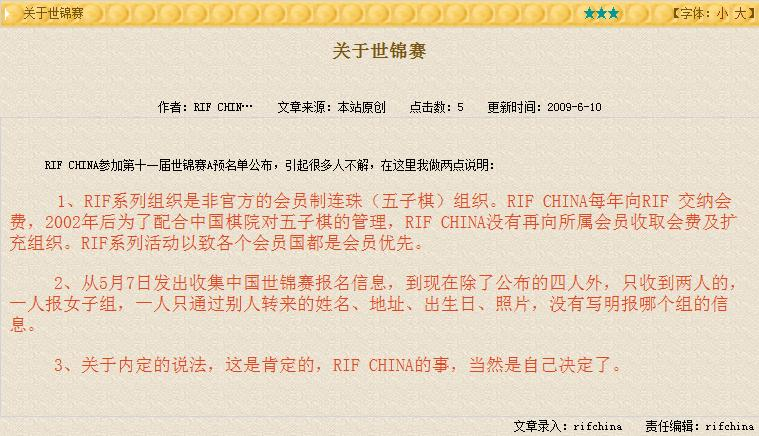
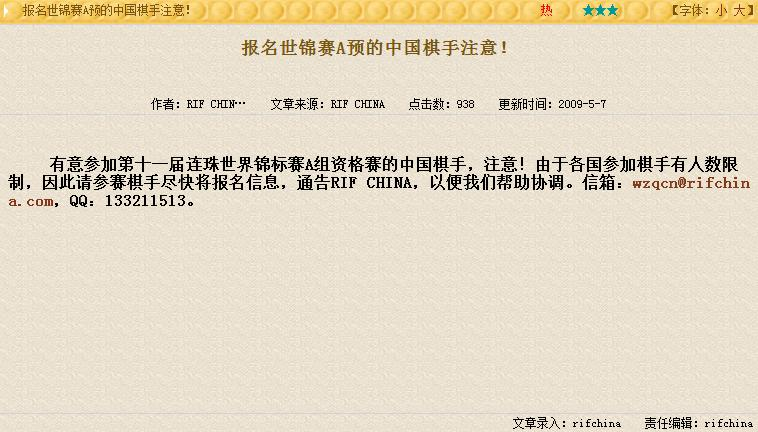
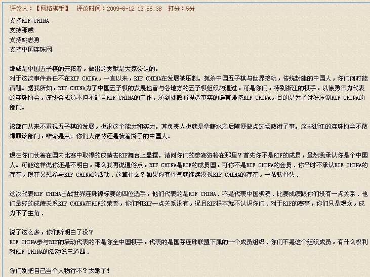

RIFChina最新消息《关于世锦赛》
#1 RIFChina最新消息《关于世锦赛》作者：屏蔽 发表时间：2009-6-10 10:32:12
今天上午上课时和相关人员联系了一下，没太问清楚，不了了之，回来上网一看，有此最新消息：

我自己的看法：
a.关于1中的理由，以及最后的结论，我不太理解关于RIF、RIFChina、会员费什么的和最后的“会员优先”有什么联系，退一步讲，即使有此优先，也不能完全封死其他人员参与活动的途径，为何连个选拔都没有？退两步讲，如果这个优先级相当之高，只要内部人员报满，就不允许外部人员参与，也应该事先对其他人员进行主动联系。退三步讲，这是一个相当NB哄哄的规定，就是不许外部人员来玩儿，为何不在报名之前说清楚？
b.关于2中报名资料的问题，昨天和棋情交流了一下，想必棋情并没什么错误。“一人”，“别人”，网络高手，世界冠军，一笔撇过，不知道这是坚持原则还是官僚主义。

关于报名组别不清的问题简直子虚乌有，上面这个新闻谁会不理解？按照报名组织规定程序进行报名出了问题算谁的？退一步讲，若是组别不明，为何不联系棋手进行确认？再退一步，组别不明，懒得确认，QT定好，BT给报了么？一份报名资料白瞎了？
c.3中的意思很明确了，内定内定，就是内定，你能咋地？敢问AT、QT的国家名额是给谁的？是给国家的，以RIFChina现在的规模和影响，能代表全中国的广大棋手么？一个内定，好家伙，自己成了国内的顶梁柱了。RIFChina自己的事情——多么置广大棋手的心情于不顾的话语。
技术上而言，这四名报名QT的棋手，曹冬的水平我还是佩服的，殷立成许久没有参与实战，或许略有下滑，但毕竟是曾经的全国（成人男子）冠军，胡夕、姚金蕊二位我却不以为意，至少拿到世界赛场上还是略显不足，这是QT/AT，不是WT，即使在国内的女棋手之中，恐怕也难属出类拔萃。
我自己，包括更多参与实战的棋手都知道，要想以最佳的状态参与一次重大比赛，需要付出多少，准备多少。如此努力付之东流，悲兮叹兮！
［ 逆刃 于 2009-6-10 10:35:54 时奖励此帖[金币加 20 威望加1］
［ 游戏人间 于 2009-6-10 10:41:47 时奖励此帖[金币加 20 威望加1］
［ 厦门小天 于 2009-6-10 11:36:55 时花20金币送鲜花一朵］
［ 小红眼镜 于 2009-6-10 12:30:47 时花20金币送鲜花一朵］
［ gerbo 于 2009-6-10 12:47:47 时花20金币送鲜花一朵］
［ 快乐天羽 于 2009-6-10 12:53:34 时奖励此帖[金币加 20 威望加1］
［ 隐藏菜系 于 2009-6-10 13:47:13 时花20金币送鲜花一朵］
［ 堂堂 于 2009-6-10 14:13:03 时花20金币送鲜花一朵］
［ 流逝 于 2009-6-10 14:24:06 时花20金币送鲜花一朵］
［ oddgod 于 2009-6-10 15:20:16 时花20金币送鲜花一朵］
［ 梦婷 于 2009-6-10 20:13:01 时花20金币送鲜花一朵］
［ 我爱丁丁 于 2009-6-10 23:33:24 时花20金币送鲜花一朵］
［ 雨一直下 于 2009-6-11 11:13:45 时花20金币送鲜花一朵］
［ 虎哥 于 2009-6-11 15:50:54 时花20金币送鲜花一朵］
［ 华夏使者 于 2011-5-31 13:13:17 时花20金币送鲜花一朵］
［ 猪小姐 于 2011-5-31 18:26:26 时花20金币送鲜花一朵］
#2 Re:RIFChina最新消息《关于世锦赛》作者：启蒙 发表时间：2009-6-10 10:35:21
李LS作为北京棋手，能够及时给大家传递消息和表达公正，公平的态度，很让我感动！#3 Re:RIFChina最新消息《关于世锦赛》作者：Solmyr 发表时间：2009-6-10 10:36:49
 顶起！！！！！！连李一都这么说了！！！
顶起！！！！！！连李一都这么说了！！！#4 Re:RIFChina最新消息《关于世锦赛》作者：不知 发表时间：2009-6-10 10:37:37
 大家不要误解某人的意思.
大家不要误解某人的意思.
他一定是觉得中国五子棋的进步实在是太快了.
所以要让其脚步停止一下.
用心良苦啊.
大鱼上一次拿到冠军.
难免有些口水会流下来.
嫉妒心理.
无语无语.
为中国五子棋默哀三分钟
#5 Re:RIFChina最新消息《关于世锦赛》作者：岳麓小棋后 发表时间：2009-6-10 10:37:39
支持下屏蔽LS，昨天我就猜到RIFCHINA会这样解释的，有志也是这样解释的，这跟卡拉OK厅的做法没什么两样，既然你不想向歌星交版权费用，你为什么又顶着CHINA的名头呢？
#6 Re:RIFChina最新消息《关于世锦赛》作者：屏蔽 发表时间：2009-6-10 10:48:22
还有个事
上次世锦赛的时候，大家知道是大鱼和云飞出战
但其实前期还有不少棋手有意向报名，记得小白和葛帅也都提到了这个事情
因为名额只有仨，当时讨论的时候大家也都明确表示人数超了就一定需要一个选拔
后来当然没这事儿，俩人顺利地出发了
结果呢，俩人带了俩世界冠军回来
[以下内容属于YY]
哇咧，不错啊，一出去就拿世界冠军，中国憋屈了这么多年啊，中国棋手NB啊
嗯嗯，下次出去把WT也拿了，哦哦
不错，大概老外都是吃干饭的，随便找个棋手砍砍
有了上次的经验，这次报的人肯定多了
弄个选拔赛吧
啥？选拔赛？把非RIFChina的会员选上咋办？多没面子
我派几个人出去，把仨世界冠军包圆儿，风风光光哦。
这么赚的事情，哪有别人的？内定内定。
内定内定……
[YY完毕]
呀，真是幼稚的逻辑，没办法，没什么城府没什么黑幕，我这样的人也就只能想这么多了。
你看上面几楼都说了嘛，人家是为了中国五子棋的发展着想的。
［ 菜包先生 于 2009-6-11 20:46:43 时花50金币砸了你一个臭鸡蛋］
#7 Re:RIFChina最新消息《关于世锦赛》作者：不知 发表时间：2009-6-10 10:56:42
 发展.发展.发展.
发展.发展.发展.
贡献.贡献.贡献.
发展个**.贡献个**
有志请允许我骂两句脏话.脏话字眼我自己屏蔽.
#8 Re:RIFChina最新消息《关于世锦赛》作者：菜包先生 发表时间：2009-6-10 11:03:10
那为什么叫RIF CHINA？中国是他配这么叫的吗？应该叫RIF那威俱乐部啊,真不要脸#9 Re:RIFChina最新消息《关于世锦赛》作者：屏蔽 发表时间：2009-6-10 11:22:25
最近期末考试，分散这个精力还真是悲剧……
刚才和相关人员又联系了，掌握了更多的情况，在此我针对性地向大家提几个建议：
1、大家要理智、冷静地看待这个问题。
2、离报名截止还有几天时间，在此期间希望有能力的人士积极、主动地与RIFChina进行交涉，一切以解决问题为最关键，尽量不要把注意力放在对RIFChina的批驳上，特别是不要放在对个人的批驳上——无论被如何夸大，个人是个人，组织的问题还是在组织的框架内得以解决的。
3、报名事件过去之后，希望大家有所反思，最好能向RIFChina提出一些建议——我们都是希望中国五子棋的发展越来越好的。
［ 梦婷 于 2009-6-10 20:16:50 时花20金币送鲜花一朵］
#10 Re:RIFChina最新消息《关于世锦赛》作者：不知 发表时间：2009-6-10 11:28:13
果真代表了中国五子棋界的权威.
#11 Re:Re:RIFChina最新消息《关于世锦赛》作者：菜包先生 发表时间：2009-6-10 11:28:45
起义了,另选人了,那威不配#12 Re:RIFChina最新消息《关于世锦赛》作者：厦门小天 发表时间：2009-6-10 11:40:19
-_-|| 昨天大鱼还叫我跟姚志勇打电话协商呢，结果连电话都不接。我那无语！
#13 Re:RIFChina最新消息《关于世锦赛》作者：魔铃 发表时间：2009-6-10 11:40:59
RC有反思的趋向吗 还是和上一级组织联系 以组织压力解决比较现实#14 Re:Re:RIFChina最新消息《关于世锦赛》作者：屏蔽 发表时间：2009-6-10 11:44:28
引用：
原文由 魔铃 发表于 2009-6-10 11:40:59 :
RC有反思的趋向吗 还是和上一级组织联系 以组织压力解决比较现实
RIF管不着这事
中国棋院懒得管这事
是这样一个时期：
自己的利益，必须自己去奋斗
#15 Re:RIFChina最新消息《关于世锦赛》作者：蛋老师 发表时间：2009-6-10 11:45:03
第3条,那个叼,一看就想抽写这个文章的人
［ 失落刀 于 2009-6-10 12:54:45 时奖励此帖[金币加 20 威望加1］威望0+1
#16 Re:Re:RIFChina最新消息《关于世锦赛》作者：菜包先生 发表时间：2009-6-10 11:54:27
围攻RIFChina的建议:
1:所有的比赛谱棋评等禁止中国连珠网发表或者转载,让他自己一个人玩吧.2:有那威签名的人在签名上打个叉叉,注明“已故”
#17 Re:RIFChina最新消息《关于世锦赛》作者：舒小三 发表时间：2009-6-10 12:17:58
挑战国内棋手的口水
#18 Re:RIFChina最新消息《关于世锦赛》作者：17号蓝星仔 发表时间：2009-6-10 12:20:29
呵呵 支持菜包先生
#19 Re:RIFChina最新消息《关于世锦赛》作者：小红眼镜 发表时间：2009-6-10 12:47:46
嗯嗯，支持李一，完全赞同！！
引用：这个建议很好~更要支持。
原文由 屏蔽 发表于 2009-6-10 11:22:25 :刚才和相关人员又联系了，掌握了更多的情况，在此我针对性地向大家提几个建议：
1、大家要理智、冷静地看待这个问题。
2、离报名截止还有几天时间，在此期间希望有能力的人士积极、主动地与RIFChina进行交涉，一切以解决问题为最关键，尽量不要把注意力放在对RIFChina的批驳上，特别是不要放在对个人的批驳上——无论被如何夸大，个人是个人，组织的问题还是在组织的框架内得以解决的。
3、报名事件过去之后，希望大家有所反思，最好能向RIFChina提出一些建议——我们都是希望中国五子棋的发展越来越好的。
 希望大家一起努力用合理的方式为棋手们争取到他们应有的权利和利益。
希望大家一起努力用合理的方式为棋手们争取到他们应有的权利和利益。
#20 Re:RIFChina最新消息《关于世锦赛》作者：丝袜伯爵 发表时间：2009-6-10 13:22:19
看了菜包的留言后，有个大胆的想法，为何不我们商讨自己成立个组织呢？
虽然，RIFCHINA是中国大陆境内唯一被RIF合法授权的“非官方”组织。如果我们能自己成立个相关组织，那么RIFCHINA他也就不会太NB了。这个问题就像国内的中国连通、中国移动、中国电信等一样的问题，官方都给垄断了，资费再怎么调，也是老百姓吃亏是一个道理的。非得让民营资本介入，多极化发展，这样中国五子棋才会有更好的明天
#21 Re:RIFChina最新消息《关于世锦赛》作者：wrwak 发表时间：2009-6-10 13:28:46
你们有这能力的就去做啊，不要光说不做，不是我泼冷水，在这里争论是什么也整不出来的。你们要搞就自己先建个群，经济独立的全部加进来，然后组织基金。 真正到做有几个愿意掏钱的。
真正到做有几个愿意掏钱的。
#22 Re:RIFChina最新消息《关于世锦赛》作者：wrwak 发表时间：2009-6-10 13:30:35
你们搞不成选拔的原因还有就是国家更本不把这当回事，否则凭几个rc的人，还敢内定？#23 Re:RIFChina最新消息《关于世锦赛》作者：四川连珠魂 发表时间：2009-6-10 13:49:43
其实想想1个民间组织的、rifchina包办的比赛参不参加也没什么大不了，生气？何必用别人的错误来惩罚自己呢，再说rifchina已经发帖表明了，会员优先，rif的事情由rifchina自己做主，那说什么和他们再商量再联系都是空话没什么实质意义了，世界锦标赛就应该改名rif内部赛，“世界”2个字,非官方组织是这样容易就加得上去的？YY罢了，呵呵［ 五林外传 于 2009-6-13 10:32:49 时花20金币送鲜花一朵］
#24 Re:RIFChina最新消息《关于世锦赛》作者：堂堂 发表时间：2009-6-10 14:14:12
跟本就没有RIFCHINA这个东西，自称的也好意思摆上台面#25 Re:RIFChina最新消息《关于世锦赛》作者：weigui 发表时间：2009-6-10 14:18:58
好象国内的所有比赛和RC都没关系，全团也是一样，不是RC举办的哦，
#26 Re:RIFChina最新消息《关于世锦赛》作者：杀手 发表时间：2009-6-10 16:58:31
第三条确实牛B
这位作者是哪方神圣？
#27 Re:RIFChina最新消息《关于世锦赛》作者：浪人痴痴 发表时间：2009-6-10 19:51:15
楼上灭刀门的?#28 Re:RIFChina最新消息《关于世锦赛》作者：天逸乄晓波 发表时间：2009-6-10 20:04:41
在中国搞民主好象有点难，尤其是现在的五子棋。
［ 有志青年 于 2009-6-11 7:07:08 时奖励此帖[金币加 20 威望加1］0+1
#29 Re:RIFChina最新消息《关于世锦赛》作者：大元 发表时间：2009-6-10 21:12:52
向屏蔽老师致敬［ 有志青年 于 2009-6-11 7:07:04 时奖励此帖[金币加 20 威望加1］0+1
#30 Re:RIFChina最新消息《关于世锦赛》作者：其怪 发表时间：2009-6-10 21:55:21
按规定应该国家选拔，虽然可能没有明文规定（可能有），但其他国家这些年来一直是这样做的。
比如日本的山口釉水，上届拿了AT第3，帮日本拿到一个AT名额，但因为在日本预选赛里没出线，这次连QT资格都没拿到。俄罗斯也是这样，每次都有全国选拔赛，绝不可能是组织内定的。
难道内定是中国特色？还是那威的皇帝特色？
［ 有志青年 于 2009-6-11 7:06:59 时奖励此帖[金币加 20 威望加1］0+1
#31 Re:RIFChina最新消息《关于世锦赛》作者：无影 发表时间：2009-6-11 0:57:48
太激烈了，观望中［ 有志青年 于 2009-6-11 7:07:16 时奖励此帖[金币加 20 威望加1］0+1
#32 Re:RIFChina最新消息《关于世锦赛》作者：gerbo 发表时间：2009-6-11 1:17:44
 RC==极权==那威一人说了算..现在的口水连起义都不算.论舆论效果,那威的效应大于一切舆论..莫非是59岁效应?
RC==极权==那威一人说了算..现在的口水连起义都不算.论舆论效果,那威的效应大于一切舆论..莫非是59岁效应?#33 Re:RIFChina最新消息《关于世锦赛》作者：gerbo 发表时间：2009-6-11 1:21:50
只能说--思想觉悟太高!!!!#34 Re:RIFChina最新消息《关于世锦赛》作者：gerbo 发表时间：2009-6-11 1:42:43
你顺应五子棋的发展趋势把五子棋带入国内,并得以发展,我们很感激你,但是这样的与国际接轨,看起来就是一个山寨RC了.正象有人说的,有你在才有五子棋的今天,同时有你在,才没有五子棋的明天.要不下台要不改变思想~!个人利益让你失去了一个国家利益.不要说什么你代表组织,那只是片面的组织,不代表中国.(不想直接说某人名字,窝火)
#35 Re:RIFChina最新消息《关于世锦赛》作者：废墟蝴蝶 发表时间：2009-6-11 6:58:13
其实这次内定我倒不觉得全是rc的责任，中国棋院根本就不承认rif，中国的个人锦标赛和团赛赛这样的大型比赛也是中国棋院比赛的。也就是说中国下的是中国五子棋竞赛规则下的五子棋，而rif下的是rif规则的连珠。只不过是恰巧规则一模一样的一样的两种棋种 当然现在rif连规则都改了 变山口了 这两个棋种就更有区别了 。 看似很矛盾，说白了就是中国棋院没有协调好和rif的关系或者说没有主动联系rif。 rif在中国官方认为只不过时一个民间组织，他跟咱们下的五子棋没有任何关系。既然这样rc在寻找下rif组织下的会员参加连珠比赛 咱们一群在下中国五子棋竞赛规则下的五子棋的棋手却一直在争辩参加或者不公平总感觉也不合适。。。
所以咱们的主要矛盾不是rc和中国国内棋手的矛盾，而是中国官方是否对rif的认可问题，要么我们就专心下我们的五子棋，不要考虑什么世锦赛。要么就和rif接触联系，把中国棋院和rif这两个领导变成一个领导。或许以后就没那么多事了。
［ 孤竹 于 2011-5-31 14:15:06 时花20金币送鲜花一朵］
#36 Re:RIFChina最新消息《关于世锦赛》作者：就是爱玩 发表时间：2009-6-11 7:00:18
很有道理#37 Re:Re:RIFChina最新消息《关于世锦赛》作者：无尽 发表时间：2009-6-11 7:18:48
引用：
原文由 废墟蝴蝶 发表于 2009-6-11 6:58:13 :其实这次内定我倒不觉得全是rc的责任，中国棋院根本就不承认rif，中国的个人锦标赛和团赛赛这样的大型比赛也是中国棋院比赛的。也就是说中国下的是中国五子棋竞赛规则下的五子棋，而rif下的是rif规则的连珠。只不过是恰巧规则一模一样的一样的两种棋种 当然现在rif连规则都改了 变山口了 这两个棋种就更有区别了 。 看似很矛盾，说白了就是中国棋院没有协调好和rif的关系或者说没有主动联系rif。 rif在中国官方认为只不过时一个民间组织，他跟咱们下的五子棋没有任何关系。既然这样rc在寻找下rif组织下的会员参加连珠比赛 咱们一群在下中国五子棋竞赛规则下的五子棋的棋手却一直在争辩参加或者不公平总感觉也不合适。。。
所以咱们的主要矛盾不是rc和中国国内棋手的矛盾，而是中国官方是否对rif的认可问题，要么我们就专心下我们的五子棋，不要考虑什么世锦赛。要么就和rif接触联系，把中国棋院和rif这两个领导变成一个领导。或许以后就没那么多事了。
不得不说，这种说法是在狡辩，并且在有意无意中转移视线，趁乱挑起棋种之争（论坛已明令禁止这个喋喋不休的话题，因为争论下去没有结果），让人看得愤怒（什么中国五子棋规则下的爱好者！？你应该认真体会下Ando这句话：真正的五子棋友，他们不会关心政治。他们只想互相交流，一起下棋、比赛，交换书本，交流心得、棋谱等……）。
首先要搞清楚此次事件的本质问题是什么。是rifchina与中国许多五子棋爱好者的矛盾，而不是rif与中国棋院的问题。rifchina顶着“china”之名，但却为一己私利，牺牲其他爱好者对五子棋的热情和付出。他们当然有权力决定，因为他们是RIF在华代理人，但他们现在能代表整个中国五子棋吗？（既然不能，他们就不具有“合法性”）无论如何，RIF举办的世界锦标赛始终是不同国家爱好者之间交流的平台，也是许多棋手的梦想，从你的语言态度我并不觉得你是一个真正的爱好者，只是一个有点幸灾乐祸的旁人。
你最后一句所说的只是一种解决方法，但不成为rifchina这种行为是合理或正常的理由。
p.s：上面的“合法性”是政治学概念，而不是法律上的。
#38 Re:RIFChina最新消息《关于世锦赛》作者：晶晶 发表时间：2009-6-11 7:35:58
同意无尽
rif是个民间组织，民间组织的意思就是非官方的，如果由官方例如中国棋院接管，那么性质就完全改变了，这样做基本上可以说是非法的，或者至少是没有法律依据。民间组织在官方看来，就是一个被管理与提供服务的对象，现在正在提倡多服务，弱化管理，民间组织的管理主要靠自身。但是这个自身不是指单个组织，而是指整个行业，由行业行规来进行约束。落到今天这个事情上，广大棋友的口诛笔伐便是在实施这个约束。但是现在缺乏更多的组织建立与参与进来，行业行规的建立便无从谈起。
不知道其他棋种的国际比赛是由官方还是由民间组织组织的，如果由中国棋院来组织这种比赛，可能会更好。
#39 Re:RIFChina最新消息《关于世锦赛》作者：废墟蝴蝶 发表时间：2009-6-11 7:37:15
抱歉 我只是自己的个人想法而已 然后就写出来了 我不认识他们 也没有偏袒他们的意思 麻烦不要误会 我也很希望五子棋能团结起来 绝对不是分裂主意者 只是希望这种矛盾和尴尬的局面早点结束 我想表达的意思是 很期望有个人 能够将rif官方化 由中国棋院接管理 而不是某个地方或者某个人说的算 这样就没那么多事了
#40 Re:RIFChina最新消息《关于世锦赛》作者：安娜制作所 发表时间：2009-6-11 10:38:41
嗯,一个团体代表不了中国,所以要给官方留下好的印象,认清真相,共同抵制不良行为和风气,让国家棋院看到我们的努力,为国内五子棋创造更好的条件,棋院才能花更多力气来发展五子棋!#41 Re:Re:Re:RIFChina最新消息《关于世锦赛》作者：莫默又开始下棋 发表时间：2009-6-11 10:44:40
引用：
原文由 无尽 发表于 2009-6-11 7:18:48 :引用：
原文由 废墟蝴蝶 发表于 2009-6-11 6:58:13 :其实这次内定我倒不觉得全是rc的责任，中国棋院根本就不承认rif，中国的个人锦标赛和团赛赛这样的大型比赛也是中国棋院比赛的。也就是说中国下的是中国五子棋竞赛规则下的五子棋，而rif下的是rif规则的连珠。只不过是恰巧规则一模一样的一样的两种棋种 当然现在rif连规则都改了 变山口了 这两个棋种就更有区别了 。 看似很矛盾，说白了就是中国棋院没有协调好和rif的关系或者说没有主动联系rif。 rif在中国官方认为只不过时一个民间组织，他跟咱们下的五子棋没有任何关系。既然这样rc在寻找下rif组织下的会员参加连珠比赛 咱们一群在下中国五子棋竞赛规则下的五子棋的棋手却一直在争辩参加或者不公平总感觉也不合适。。。
所以咱们的主要矛盾不是rc和中国国内棋手的矛盾，而是中国官方是否对rif的认可问题，要么我们就专心下我们的五子棋，不要考虑什么世锦赛。要么就和rif接触联系，把中国棋院和rif这两个领导变成一个领导。或许以后就没那么多事了。
不得不说，这种说法是在狡辩，并且在有意无意中转移视线，趁乱挑起棋种之争（论坛已明令禁止这个喋喋不休的话题，因为争论下去没有结果），让人看得愤怒（什么中国五子棋规则下的爱好者！？你应该认真体会下Ando这句话：真正的五子棋友，他们不会关心政治。他们只想互相交流，一起下棋、比赛，交换书本，交流心得、棋谱等……）。
首先要搞清楚此次事件的本质问题是什么。是rifchina与中国许多五子棋爱好者的矛盾，而不是rif与中国棋院的问题。rifchina顶着“china”之名，但却为一己私利，牺牲其他爱好者对五子棋的热情和付出。他们当然有权力决定，因为他们是RIF在华代理人，但他们现在能代表整个中国五子棋吗？（既然不能，他们就不具有“合法性”）无论如何，RIF举办的世界锦标赛始终是不同国家爱好者之间交流的平台，也是许多棋手的梦想，从你的语言态度我并不觉得你是一个真正的爱好者，只是一个有点幸灾乐祸的旁人。
你最后一句所说的只是一种解决方法，但不成为rifchina这种行为是合理或正常的理由。
p.s：上面的“合法性”是政治学概念，而不是法律上的。
所以说啊~嘛没玩没了的争论啊？下棋便是！
#42 Re:RIFChina最新消息《关于世锦赛》作者：无尽 发表时间：2009-6-11 10:52:31
现在连资格都被特权剥夺了#43 Re:RIFChina最新消息《关于世锦赛》作者：有志青年 发表时间：2009-6-11 12:02:45
土豆：小天棋情进 棋友们冷静#44 Re:RIFChina最新消息《关于世锦赛》作者：大元 发表时间：2009-6-11 20:31:51
再次支持李LS#45 Re:RIFChina最新消息《关于世锦赛》作者：柳叶儿 发表时间：2009-6-11 21:06:30
支持无尽，拜托废墟蝴蝶先弄弄清楚。#46 Re:RIFChina最新消息《关于世锦赛》作者：失落刀 发表时间：2009-6-12 17:47:59

抓个图。
大鬼的评论是：
伟鬼(1731970) 17:46:30
想把我拖下水了
#47 Re:RIFChina最新消息《关于世锦赛》作者：晶晶 发表时间：2009-6-12 18:37:33
说到历史问题了，可惜也是漏洞百出。“为了中国五子棋的发展”，还是为了rc的发展？“该协会成员不
但不配合rc的工作”，人家有什么义务配合你，凭什么你就能代表了“中国五子棋”，从你这句话就能看
出当时你是怎么一副高高在上的样子。“该部门从来不重视五子棋的发展，也没这个能力和实力”，这是
指中国棋院么，当中国五子棋刚刚起步的时候，凭什么该部门就必须重视五子棋的发展，而且“重视五子
棋的发展”就是要承认你们？只有通过自己的努力才能获得别人的承认！这几年rc销声匿迹，中国五子棋
却获得了蓬勃的发展，中国棋院也开始重视五子棋，这还不能说明问题吗？既然如此贬低“该部门”，现
在为何却妄想让大家向中国棋院建议承认你们？现在大家恐怕不是“继续漠视rc的存在”，而是憎恶rc的
存在。
［ 岳麓小棋后 于 2009-6-12 18:40:05 时花20金币送鲜花一朵］
［ 岳麓小棋后 于 2009-6-12 18:40:25 时花20金币送鲜花一朵］
［ 岳麓小棋后 于 2009-6-12 18:40:56 时花20金币送鲜花一朵］
［ 五子天涯 于 2009-6-23 14:43:14 时花20金币送鲜花一朵］
#48 Re:RIFChina最新消息《关于世锦赛》作者：帝霜仪 发表时间：2009-6-12 19:29:14
胖子的确有点过分，有点山大王的感觉了#49 Re:RIFChina最新消息《关于世锦赛》作者：厦门小天 发表时间：2009-6-12 20:47:13
突然懂了，原来那威把我跟棋情当浙江棋手了~~~ 还在搞地区对立啊！#50 Re:RIFChina最新消息《关于世锦赛》作者：四川连珠魂 发表时间：2009-6-12 20:53:07
就算你们不是浙江棋手结果仍然是这样的，伟鬼大哥的帖子其实很说明问题，如果rifchina没找到赞助，那么你们自然就获得这个资格了，打出成绩rifchina功不可没。没打好，也只能怪自身努力不够，现在找到了赞助，那就是内部会员“备战智力运动会”，其他地区的棋手报名就是搞着玩的。#51 Re:RIFChina最新消息《关于世锦赛》作者：wrwak 发表时间：2009-6-12 21:15:54
那胖之后会有其他胖的 ，还是息事宁人吧
，还是息事宁人吧#52 Re:RIFChina最新消息《关于世锦赛》作者：四川连珠魂 发表时间：2009-6-12 21:28:43
| 评论主题：促使中国官方尽快与RIF建立联系（评论内容只代表网友观点） | ||||||||||||
| ||||||||||||

#53 Re:RIFChina最新消息《关于世锦赛》作者：堂堂 发表时间：2009-6-12 22:01:27
怎么越来越像水贴了
随便搞几个小马甲发一通成这样了
#54 Re:RIFChina最新消息《关于世锦赛》作者：厦门小天 发表时间：2009-6-12 22:05:03
 ……算长见识了！
……算长见识了！#55 Re:RIFChina最新消息《关于世锦赛》作者：大元 发表时间：2009-6-12 22:26:59
我已经无语了，人不能无耻到这种地步。#56 Re:RIFChina最新消息《关于世锦赛》作者：大元 发表时间：2009-6-12 22:29:34
小小的RC折射出人性最丑恶和卑劣的一面
#57 Re:Re:RIFChina最新消息《关于世锦赛》作者：斜月 发表时间：2009-6-13 2:24:38
引用：这个看着太象“托儿”了，过于明显，以至于有人回复认为是卧底，是故意黑那威先生的^_^
原文由 四川连珠魂 发表于 2009-6-12 21:28:43 :
评论主题：促使中国官方尽快与RIF建立联系（评论内容只代表网友观点）
评论人：【敢说真话】 评论时间：2009-6-12 18:48:01 打分：5分 建议中国棋院聘请那威先生担任棋院五子棋项目主任，这样有利于团结中国棋手，也可以快速发展中国的五子棋。
如果那威先生不肯担任，我们全网络棋手联名请求。相信那威先生会考虑的。
倘若嫉贤妒能。只会成为中国五子棋运动的绊脚石！
评论人：【旁观者】 评论时间：2009-6-12 18:39:10 打分：5分 一切都明白了，原来中国棋院拉不下这个脸主动与rifchina建立联系，才造成了这次国内棋手对rifchina的误解。
#58 Re:RIFChina最新消息《关于世锦赛》作者：红豆 发表时间：2009-6-22 13:46:06
这可咋整 有净土没有了#59 Re:RIFChina最新消息《关于世锦赛》作者：轻雨飞扬 发表时间：2009-6-22 17:35:19
怎么这样乱呀？大家都是玩五子棋的，本来五子棋在中国发展就很艰难，这个节眼上，大家心胸都开阔点好吧？团结一切可以团结的力量才对呀！#60 Re:RIFChina最新消息《关于世锦赛》作者：岑小鱼 发表时间：2011-5-31 13:00:20
这么多事情啊。。。。。。。#61 Re:RIFChina最新消息《关于世锦赛》作者：慕容晓文 发表时间：2011-5-31 15:07:40
呵呵
过去没有中国棋手参加RIF的世锦赛，也没什么争议的
现在因为大鱼和云飞去了一次并由大鱼夺冠之后争取来了一个国家名额，从此争议就开始产生了
其实，我始终觉得，大家把RIFCHINA的定性搞错了
从本质上说，RIFchina没有义务去搞什么选拔赛，派谁去那是人家的自由。RIF是一个会员联盟，所有事务的决策都是联盟的内部决策，从这个角度上说，我们不是RIFCHINA或者说是RIF的会员，我们也无权干涉RIFCHINA在RIF这个联盟中的行为，因为我们都是外人
#62 Re:RIFChina最新消息《关于世锦赛》作者：讲五堂笑天 发表时间：2011-5-31 15:29:19
人怕出名猪怕壮啊。但是中国真正的第一批五子棋棋手都是看CCTV5那威的五子棋教学才开始喜欢五子棋的。人家那威的确是中国对五子棋贡献最大的
#63 Re:RIFChina最新消息《关于世锦赛》作者：高飞 发表时间：2011-5-31 15:45:20
 我貌似没看过
我貌似没看过#64 Re:Re:RIFChina最新消息《关于世锦赛》作者：慕容晓文 发表时间：2011-5-31 16:18:07
引用：
原文由 高飞 发表于 2011-5-31 15:45:20 :
你是第N批了……我也没看过，貌似听说是95年左右，那时我还在上中学呢，每天放学踢球还踢4、5小时足球呢
呵呵
#65 Re:RIFChina最新消息《关于世锦赛》作者：许相公 发表时间：2011-5-31 19:17:40
本人看过，然后就上贼船了，他这玩意一直播出了能有1年。强悍#66 Re:RIFChina最新消息《关于世锦赛》作者：老黄 发表时间：2011-5-31 19:34:14
我就看过一期，讲八卦防守的，然后用这个包了很多MM的饺子、
#67 Re:RIFChina最新消息《关于世锦赛》作者：岑小鱼 发表时间：2011-5-31 20:10:56
我同学看过，，当时我是想看没找到...
去年（前年?）倒是在一个节目上看见了....
#68 Re:RIFChina最新消息《关于世锦赛》作者：灯塔连珠 发表时间：2011-5-31 21:31:13
2009年的旧闻了。-----------涛声依旧呀！！！！！！！！！！